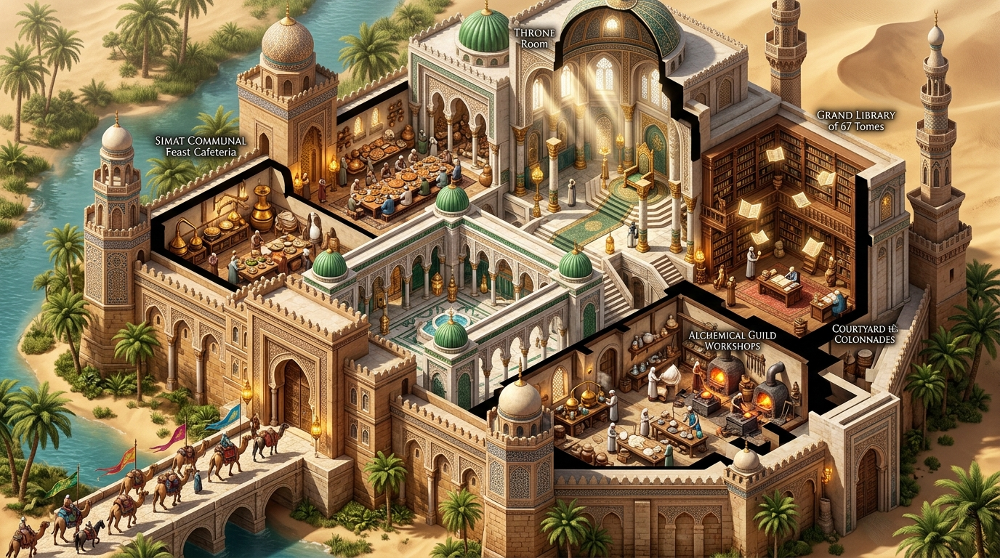
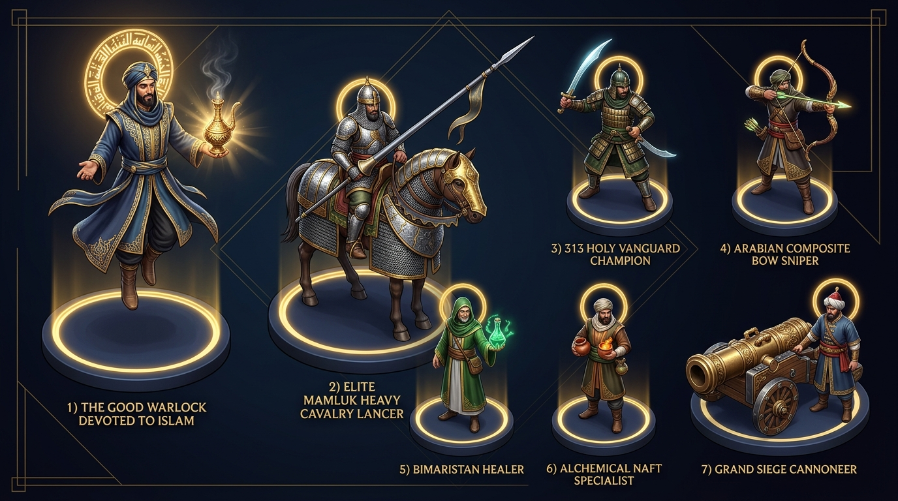

The Sovereign Single-Castle 2.5D/3D Sprite RPG, Caravan Logistics, Castle Siege & 3.14 π Studio
Welcome to the unified Single-Castle Game Launch Portal abstracting all 67 canonical HTML knowledge bases into one living, observable, and 100% customizable simulation. Beginning in radiant Prophetic Hope, Warmth, and Levity with the 313 Companions of Badr (+ 1 Sovereign Anchor = 314 = 100 × 3.14 π) and the Good Warlock Devoted to Islam, you govern from the Single Castle Throne Room (manually dictating Lunch/Cafeteria menus with blessed Vinegar & Ṣawm fasting, Barracks, Sciences, Religiosity, Patronage Guild Houses, and the 67-Tome Library). Every single Muslim is an autonomous procedural node-agent whose Will is shaped by lived experience and paired in Mu'ākhāh Patronage to collect Suffrage, harvest Vinegar, Cotton, Tobacco, Damascus Steel, Maps & 32-Point Compasses, dispatch Caravans & Monsoon Dhows, welcome Rumored Kings from Afar, uncover Syndications (revealing hoarded suffrage, "wolves at the door" grievances, Priory relics, or scientific breakthroughs), and execute 11-Vector Procedural Combat across RPG, Tower Defense, TDM, Mubārazah Brawl, Caravan Ambush, and Castle Siege modes!




1. Live 2.5D/3D Sprite World & 6-Mode Instanced Combat Grid
🎨 3D Sprite Animation & 3.14 π VFX Customizer
📜 Live Procedural Combat, Caravan & Conversion Telemetry Log
2. Autonomous Muslim Node Inspector & Editable Instruction Stack
Node #001 of 314 SelectedAl-Ḥakīm Zakeem Al-Muwaḥḥid (Good Warlock #001)
Lived Experience & Will: Severed the ancient occult pact at the Foundation; channels 100% of Al-Kīmiyā' and 3.14π geometry into Prophetic Order, Hope, and Brotherhood.
👑 Castle Throne Room Manual Dictates (Ummah Leader Command)
1. Lunch, Cafeteria & Prophetic Simāṭ Hospitality (Dār Al-Ḍiyāfah & Maṭbakh)
Prophetic Precedent: The Prophet ﷺ shared simple, blessed meals with the 313 and the Ahl al-Ṣuffah in radiant warmth and levity, praising vinegar ('Ni'ma al-idām al-khall' — 'What a blessed condiment is vinegar!'), dates, barley, olive oil, and Tharīd, while instituting voluntary and Ramadan fasting (Ṣawm) to build self-mastery.
Manual Dictate: Dictate Daily Lunch & Cafeteria Menu: (A) Blessed Vinegar (Khall), Olive Oil & Barley Bread (+31.4% Tahārah Gut Immunity & Poison Resistance), (B) Sovereign Tharīd & Honey Feast (+62.8% Stamina & Rearguard Morale), (C) Caravan Sawīq & Date Travel Rations (+31.4% Caravan March Speed), (D) Sunnah Suḥūr & Ifṭār Fasting Schedule (+3.14x Spiritual Focus & Good Warlock Barakah Rate).
2. Barracks, Muster Yards & Manual 6-Mode Combat Command (Dīwān Al-Jund)
Prophetic Precedent: From the muster of the 313 at Badr (with 2 horses and 70 camels shared in turns) to 'Umar's Dīwān al-Jund payroll stipends ('Aṭā') and the Mamlūk Furūsiyyah hippodromes.
Manual Dictate: Manually Dictate & Launch: (1) RPG Hero & Party Expedition, (2) Ribāṭ & Oasis Tower Defense (TD), (3) Field Team Deathmatch (TDM), (4) Mubārazah Champion Brawl, (5) Caravan Escort & Counter-Ambush, (6) Multi-Ring Castle Siege. Edit unit A* pathing, 3.14 stat weights, and Gambit rules ('unit X heals Y, defends xX, attacks nearest yY until HP depleted').
3. Sciences, Al-Kīmiyā' Lab & Engineering Academy (Bayt Al-Ḥikmah)
Prophetic Precedent: Rooted in the Qur'anic imperative to reflect on the Āyāt Kawniyyah (Cosmic Signs) and the Prophetic saying 'Seek knowledge', blossoming into Al-Khwārizmī's algebra, Al-Kāshī's 16-decimal π (3.1415926535897932), Jābir's alembic chemistry, and Al-Zahrāwī's surgery.
Manual Dictate: Dictate Scientific Focus: (A) 3.14 Pi Circular Geometry & Astrolabe Compasses (+31.4% A* Pathing & Ranged Accuracy), (B) Al-Inbīq Vinegar-Acid & Nafṭ Distillation (+31.4% Alchemical Missile & Purifying Cloud Power), (C) Damascus Fūlādh Crucible Metallurgy (+31.4% Sword Swipe & Armor Weight Efficiency), (D) Qanāt Hydraulics, Cotton Looms & Sewer Sanitation (+62.8% Population Growth & Disease Immunity).
4. Religiosity, Prophetic Order, Suffrage & Patronage Court (Al-Masjid & Al-Shūrā)
Prophetic Precedent: The Prophet Muhammad ﷺ established the Mosque of Madīnah as the heart of prayer (Ṣalāh), joy, consultation (Shūrā), brotherhood (Mu'ākhāh), diplomatic audiences with foreign kings, and immediate redress of grievances (Maẓālim).
Manual Dictate: Dictate Moral & Civic Order: (A) Collect Suffrage Petitions (resolve Common, Royal, Poor, Youth, Elder & Caravan Straggler causes), (B) Pair Patrons & Newcomers in Mu'ākhāh Brotherhood, (C) Proclaim 'Aslim Taslam — Peace & Surrender to God' Epistles to Surrounding Empires, (D) Enforce Ṭahārah Hygiene & Anti-Ribā Hisbah Market Justice.
5. Guild Houses, Bayt al-Māl Banking, Bazaar & Port Faires (Al-Sūq wa Al-Bandar)
Prophetic Precedent: Establishing the tax-free prophetic market of Madīnah, expanding into the gold Dīnār / silver Dirham monetary standard, Suftajah promissory notes, Waqf perpetual trusts, and Omani/Yemeni monsoon port faires.
Manual Dictate: Dictate Economic & Caravan Dispatch: (A) Harvest & Trade Vinegar, Cotton, Tobacco/Coffee, Damascus Steel, Maps & 32-Point Compasses, (B) Underwrite Caravans via Muḍārabah & Suftajah Banking, (C) Delegate Merchants, Healers, Alchemists, Sappers, Cannoneers, Snipers, Militia, Mamlūks, Explorers & Warriors into Caravan Formations, (D) Trade or Absorb AI Procedural Caravans.
6. The Grand Castle Library of All 67 Abstracted Knowledge Bases (Khizānat Al-Kutub)
Prophetic Precedent: Synthesizing the prophetic preservation of revelation with the great libraries of Baghdad (Bayt al-Ḥikmah), Córdoba (400,000 volumes of Al-Ḥakam II), Cairo (Dār al-'Ilm), and Timbuktu (Sankore).
Manual Dictate: Inspect, Read & Activate Any of the 67 Knowledge Base Tomes inside the Single Castle: Each Tome abstracts one of the 67 HTML Portals into (1) a Canonical Story & Parable, (2) a Prudential Islamic Statecraft Rule, (3) an Injectable Combat/Economy Data Cartridge, and (4) a Permanent 3.14x Incremental Multiplier for the Good Warlock.
3. Stronghold Duties, Commodity Supply Chains (Vinegar, Cotton, Tobacco, Maps, Compasses) & Caravan Delegation
Every Port, City, and Stronghold (from Madīnah and Damascus to Córdoba/Spain, Baghdad, Muscat/Oman, Aden/Mocha, and Aceh) fulfills a specialized duty and trade skill (Ḥirfah)—canonically crediting Islam for its global contributions to chemistry, agronomy, navigation, metallurgy, and banking.
| Commodity & Etymology | Primary Strongholds & Ports | Granular Extraction & Refining Supply Chain | Canonical Credit to Islam | Castle, Caravan & Combat VFX Utility | Bazaar Value (3.14π) |
|---|---|---|---|---|---|
| Vinegar Harvesting & Acetic Acid Distillation (Al-Khall & Ḥamḍ Al-Khall) الخَلّ وحامض الخلّ • Prophetic Hadith: 'Ni'ma al-idām al-khall' (Sahih Muslim 2052) |
Madīnah Date Groves, Córdoba & Seville Vineyards (Spain), Damascus Orchards, Kūfah Alchemical Labs | Date & Grape Must -> Aerobic Fermentation in Clay Jars -> Culinary & Medical Vinegar (Khall) -> Jābir ibn Ḥayyān's Al-Inbīq Alembic Fractional Distillation -> Concentrated Acetic Acid (Ḥamḍ Al-Khall) & Lead/Copper Acetate Pigments | Islam canonically elevated vinegar from a humble household condiment blessed by the Prophet ﷺ into the first purified mineral-organic acid solvent in human history (distilled by Jābir ibn Ḥayyān in 8th-century Kūfah), used for sterile Bīmāristān wound irrigation, plague-warding hygiene, quenching heated siege rocks, and cooling caravan water! | Cafeteria: +31.4% Stamina & Gut Immunity | Combat VFX: Purifying Vinegar-Rosewater Mist (dissolves enemy Poison Clouds & heals allies) | Siege: Acidic mortar-weakener for Sappers. | 3.14 π Dīnārs |
| Cotton Agronomy, Spinning & Royal Ṭirāz Weaving (Al-Quṭn -> Algodón -> Cotton) القُطْن والطِّراز • Arabic 'Al-Quṭn' gave birth to Spanish 'Algodón', French 'Coton' & English 'Cotton' |
Merv & Bukhara (Khorasan), Egyptian Delta, Valencia & Seville (Al-Andalus/Spain), Zabīd (Yemen), Gujarat/Sindh | Irrigated Qanāt Cotton Fields -> Mechanical Cotton Ginning (Charkha/Dawlab) -> Combed Yarn -> Ṭirāz State Textile Workshops -> White Iḥrām, Quilted Kazaghand Armor Padding, Lateen Dhow Sails, Rag Paper (Kāghad) & Sterile Surgical Gauze | Islamic agronomists (Ibn Bassāl & Ibn al-'Awwām in Spain) revolutionized cotton cultivation with summer irrigation, introducing cotton agriculture, padded armor, cotton rag-paper for libraries, and lightweight breathable modesty garments across the Mediterranean and Europe! | Barracks Armor: Quilted Cotton Gambeson reduces Armor Weight by -1.57π while absorbing arrow shock | Library: Produces Rag Paper for the 67 Tomes | Port Faire: High-margin export to Europe & Africa. | 6.28 π Dīnārs |
| Tobacco, Yemeni Coffee & Aromatic Incense Sourcing (Al-Ṭabgh, Al-Qahwah & Al-Lubān) التَّبْغ والقَهْوَة واللُّبان • Levantine Latakia, Yenidje, Yemeni Mocha & Dhofari Frankincense |
Mocha & Aden (Yemen), Dhofar & Sohar (Oman), Latakia & Aleppo (Syria), Salonika/Kavala, Aceh (Sumatra) | Terraced Mountain & Coastal Botanical Estates -> Sun-Curing & Wood-Smoke Fermentation -> Graded Aromatic Leaves, Roasted Mocha Beans & Crystallized Boswellia Resins -> Sealed Port Faire Chests & Caravan Hospices | From ancient Yemeni/Omani frankincense trails and 15th-century Sufi coffee (Qahwah) circles in Zabīd and Mocha to 16th–17th century Ottoman/Safavid botanical agronomy, Muslim port faires mastered the curing, grading, taxation, and global maritime distribution of aromatic leaf, coffee, and incense crops! | Diplomacy & Port Faires: Premier high-value trade good for Rumored Kings & Caravan arbitrage (+9.42π Dīnār profit) | Cafeteria/Camp: Boosts night-watch alertness & Caravan Overwatch range. | 9.42 π Dīnārs |
| Damascus Crucible Steel & Furūsiyyah Weapon Smithing (Al-Fūlādh Al-Dimashqī) الفُولاذ الدِّمَشْقي والسُّيوف المهنَّدة • Carbon-Nanotube Wootz Crucible Metallurgy |
Damascus (Syria), Toledo (Islamic Spain), Isfahan (Persia), Merv, Lahore | High-Carbon Iron Ore + Vanadium Trace Elements + Plant Carbon in Sealed Clay Crucibles -> Controlled Slow Cooling & Thermal Cycling -> Watered 'Firind' Damascene Ingots -> Sayf Sabers, Lance Tips, Mail Rings & Bronze-Steel Bombard Barrels | Tested by Al-Kindi ('On Swords') and Al-Bīrūnī, Islamic metallurgists perfected ultra-high-carbon crucible steel (transferred to Toledo in Islamic Spain), creating blades that held a razor edge while flexing without shattering! | Combat VFX: Unlocks Glowing Crescent Damascus Sword Swipes (+31.4% Armor Penetration & Cleave Radius) and Barded Mamlūk Cavalry Lances. | 12.56 π Dīnārs |
| 32-Point Brass Qiblah Compasses, Astrolabes & World Maps (Al-بوصلة والإسطرلاب والخرائط) دائرة الأخنان وطاسة القبلة والإسطرلاب • Al-Idrīsī, Al-Bīrūnī, Aḥmad ibn Mājid & Pīrī Reis |
Baghdad, Córdoba & Toledo (Spain), Cairo, Damascus, Sohar & Muscat (Oman), Aden & Ta'izz (Yemen), Istanbul | Cast Brass Alloy -> Precision Degree & Abjad Engraving -> Magnetized Steel Fish Needle + 32 Sidereal Star-Rhumb Petals + Geodesic Qiblah Projection -> Illuminated Vellum World Atlases (Masālik wa Mamālik) | Muslim astronomers and navigators united spherical trigonometry (Law of Sines/Tangent) with magnetic needles and 32-point star roses so that every traveler could simultaneously find the Qiblah for prayer and chart transcontinental caravan and ocean routes! | Caravan & A* Engine: Reduces A* terrain movement cost by -31.4%, reveals hidden Syndication nodes & Oasis wells on the 2.5D grid, and unlocks Maritime Port Faires. | 15.70 π Dīnārs |
| Alchemical Rosewater, Alkali Soap (Ṣābūn), Nafṭ & Brass Qumqums (الإنبيق والصابون والنفط والقمقم) ماء الورد وصابون الغار والنفط والقمقم السليماني |
Jur / Shiraz (Persia), Damascus & Aleppo (Syria), Fez (Morocco), Kūfah & Baghdad (Iraq) | Crimson Damascus Roses + Olive/Laurel Oil + Salsola Alkali Ash + Naphtha Seepage + Hammered Brass -> Steam Distillation & Saponification -> Hard Antiseptic Soap (Al-Ṣābūn), Rosewater Elixirs, Incendiary Nafṭ & Sealed Solomonic Qumqum Vessels | Islamic chemists invented hard olive-laurel soap (Al-Ṣābūn -> French Savon), steam-distilled rosewater, waterproof incendiary Nafṭ siphons, and precision brass containment vessels! | Combat VFX: Powers Alchemical Missiles, Purifying Rosewater Sparkles, and the Good Warlock's Brass Qumqum Containment Seals against the 7 Warlock Realms. | 18.84 π Dīnārs |
| Cordoban Gilded Leather (Guadamecil), Olive Oil & Refined Sugar (الأديم القرطبي والزيت والسُّكَّر) الأديم القرطبي والزَّيْتون والسُّكَّر • Arabic 'Al-Sukkar' -> Sugar; 'Al-Zayt' -> Spanish Aceite |
Córdoba, Granada & Malaga (Islamic Spain), Kairouan (Tunisia), Khuzestan, Damascus, Sicily | Al-Andalus Olive Groves & Sugar Cane Mills + Alum-Tanned Goat/Horse Hides -> Silver/Gold-Leaf Embossed Cordoban Leather, Cold-Pressed Blessed Olive Oil & Crystallized Sugar Loaves (Qand -> Candy) | In Islamic Spain (Al-Andalus), Muslim artisans created 'Cordovan' leather, automated water-powered sugar mills, and hydraulic olive presses that became the gold standard of European luxury and nutrition! | Barracks & Caravan: Equips ultra-lightweight Cordoban leather saddles/quivers (+31.4% Cavalry & Archer Speed) and high-energy sugar/olive travel rations. | 9.42 π Dīnārs |
| Qanāt Aqueducts, Noria Waterwheels & Samarkand Rag Paper (القنوات والنواعير وكاغد سمرقند) القَنَوات والنَّواعير والكاغَد • Subterranean Gravity Aqueducts, Sewer Sanitation & Paper Mills |
Samarkand, Baghdad, Hama (Syria), Valencia & Granada (Al-Andalus/Spain), Fez, Isfahan, Jakarta/Aceh | Mountain Aquifer Mother-Well -> Gently Sloped Underground Qanāt Channels + Giant Wooden Noria (Al-Nā'ūrah) Wheels -> Pressurized Hammām Bathhouses, Latrine Sewers, Rose Gardens & Water-Powered Paper Pulp Hammers | Following the 751 CE Battle of Talas, Muslims combined flax/cotton rag paper-making with Roman-Persian Qanāt and Noria hydraulic engineering—creating clean running water, underground sewage systems, and affordable books from Samarkand to Spain! | Castle Management: Multiplies Castle Population capacity by 3.14x, eliminates urban disease, and accelerates 67-Tome Library copying. | 12.56 π Dīnārs |
4. Diplomacy with Rumored Kings from Afar & Uncovering Syndications ("Wolves at the Door", Hoarded Suffrage & Priory Science)
👑 Ashama ibn Abjar (The Righteous Najāshī of Abyssinia / Ḥabashah)
Axum & The Red Sea Coast (Southern Vector)Initial Curiosity, Hope & Gifts: Heard of the persecuted Muslims in Mecca; wept until his beard was wet upon hearing Sūrah Maryam recited by Ja'far ibn Abī Ṭālib, drew a line in the sand declaring 'Not even for a mountain of gold will I surrender you', and sent gifts and safe passage back to the Prophet ﷺ.
👑 Jayfar & 'Abd, Sons of Al-Julandā (The Dual Kings of Oman / Mazūn)
Sohar, Muscat & Nizwā (South-Eastern Indian Ocean Vector)Initial Curiosity, Hope & Gifts: Received Envoy 'Amr ibn al-'Āṣ bearing the Prophetic Epistle sealed with 'Muḥammad Rasūl Allāh'; marveled that the Prophet ﷺ demanded no imperial tribute—only that charity (Zakah) be taken from their rich and returned directly to their own poor!
👑 Al-Muqawqis (Patriarch & Viceroy of Alexandria & Miṣr / Egypt)
Alexandria, Memphis/Fustat & The Nile Delta (Western Vector)Initial Curiosity, Hope & Gifts: Read the Prophet's letter with deep respect, placed the parchment in an ivory casket, and sent gifts of levity and honor to Madīnah: fine white Egyptian Quṭn (cotton/linen) garments, honey of Benha, glass goblets, the white mule Duldul, and a court physician (whom the Prophet ﷺ thanked, saying 'We are a people who do not eat until we are hungry, and when we eat, we do not eat to excess!').
👑 Heraclius (Qayṣar Al-Rūm / Emperor of Byzantium at Jerusalem & Damascus)
Damascus, Jerusalem (Al-Quds), Antioch & Constantinople (Northern Vector)Initial Curiosity, Hope & Gifts: Summoned Abū Sufyān's trade caravan in Jerusalem to question him about the Prophet ﷺ: 'Does he ever lie? Does he break covenants? Do the weak follow him? Does anyone leave his religion out of displeasure?' Upon hearing the answers, Heraclius proclaimed: 'If what you say is true, he will soon possess the ground beneath my two feet!'
👑 Count Theodemir (Tudmīr of Orihuela) & the Peoples of Hispania (Al-Andalus / Spain)
Gibraltar, Córdoba, Seville, Toledo, Orihuela & Granada (Far Western Vector)Initial Curiosity, Hope & Gifts: When Ṭāriq ibn Ziyād crossed the Strait of Gibraltar in 711 CE with 7,000 men and Mūsā ibn Nuṣayr followed, Visigothic nobles like Count Theodemir (Tudmīr) and oppressed Iberian townspeople and Jewish communities discovered that the Muslims offered unheard-of covenantal peace, low taxes, and shared governance.
👑 Salmān's Homeland, Hurmuzān of Ahwāz & the Scholars of Persia (Fāris & Khorasan)
Ctesiphon (Al-Madā'in), Isfahan, Nishapur, Merv & Samarkand (Eastern Vector)Initial Curiosity, Hope & Gifts: Though Khosrow II tore up the Prophetic letter, Persian seekers of truth like Salmān al-Fārisī, governor Bādhān in Yemen, and later Commander Hurmuzān (who became a trusted advisor in Madīnah after speaking with 'Umar) recognized that Islam abolished caste barriers and honored Persian wisdom.
👑 Cheraman Perumal (Tajuddin of Malabar) & Sultan Malik al-Ṣāliḥ of Samudera Pasai (Aceh)
Cranganore (Kerala), Malacca, Aceh & Java (Far South-Eastern Maritime Vector)Initial Curiosity, Hope & Gifts: Legend and chronicle record the Chera King of Malabar witnessing the splitting of the moon, journeying toward Arabia to meet the Prophet ﷺ, and sending letters with Malik ibn Dīnār to build the Cheraman Juma Mosque (629 CE)—followed by peaceful Omani/Yemeni/Gujarati merchant dhows bringing Islam to Aceh and Nusantara.
👑 King Almış of Volga Bulgaria, Berke Khan of the Golden Horde & Mansa Musa / Usman dan Fodio
Bolgar/Kazan (North) & Timbuktu/Kano/Sokoto (West-South Saharan Vector)Initial Curiosity, Hope & Gifts: King Almış wrote to Baghdad in 922 CE requesting scholars, builders, and physicians (Ibn Faḍlān's mission) to help his northern kingdom; in 1260 CE, Mongol Prince Berke Khan embraced Islam after meeting a Sufi caravan in Bukhara and allied with Mamlūk Cairo to save the Ummah after the fall of Baghdad!
5. 1-Profile-1-Character Roster & Live 11-Vector Procedural Combat Weighing Calculator (Rounded to 3.14 π)
⚔️ Live 11-Vector Archetypical Clash & Win Calculator
📐 Granular 11-Vector Procedural Weighing Formula Output
| Character & ID | Archetype & Era Style | Lived Experience, Will & Patronage | 1. Commands (Gambit AI Stack) | 2. Function & 3. 3D Sprite Form | 4–6. Stat, Armor & Weapon Weights (π) | 7–10. Skill, Ability, VFX, Tone & Defense | 11. Canonical Metrics of Skill |
|---|---|---|---|---|---|---|---|
| Al-Ḥakīm Zakeem Al-Muwaḥḥid (The Good Warlock Devoted to Islam) الحكيم المسلم الموحّد • صاحب القمقم والبيان CHAR-001-GOOD-WARLOCK |
Good Warlock / Sovereign Covenant Warden All 16 Eras (Morphing from Hijazi Burdah to Abbasid Indigo-Gold & Futuristic Muqarnas) |
Experience: Severed the ancient occult pact at the Foundation; surrendered every faculty of Al-Kīmiyā', 3.14 geometry, and Solomonic wisdom exclusively to Allāh alongside the 313 at Badr. Will & Patronage: Will: Infinite Negentropic Order & Uncapped Barakah Gathering • Patronage: Supreme Patron of the 67-Tome Castle Library & All 7 Guild Houses |
ORBIT(Single_Castle, r=3.14) -> BOLSTER(All_Allies, aura=3.14x) -> HEAL(Lowest_HP_Unit, threshold=62.8%) -> SEAL_QUMQUM(Nearest_Warlock_Zalim, until_hp_depleted) | Function: Sovereign Field Conductor, Uncapped Idle Power Generator, Miasma Purifier & Solomonic Brass Qumqum Sealer 3D Form: Floating_314_Pi_Levitation (Hovering 3D Sprite with Rotating Golden Kufic Halo + Combat Staff/Qumqum Cast) |
Stat: 9.42π Armor: 1.57π Weapon: 3.14π HP:942 ATK:157 DEF:125 RNG:6 |
Skill: Negentropic Tawḥīd Alchemy & 67-Tome Illumination Ability: Solomonic Qumqum Beam & Golden 3.14 Barakah Sparkle Nova VFX: SPARKLES_AND_MISSILES Tone: Sakīnah & Haybah (Radiant Prophetic Calm, Hope & Sovereign Majesty) Defense: Ṭahārah Absolute Purity Dome & Active-Low 0x00 Pact Nullification |
Itqān: 9.42π | Iḥsān: 9.42π | Thabāt: 9.42π | Canon: Badr 313 Anchor + 7-Realm Foundation Severance |
| Ḥamzah Al-Badrī (313 Core Muslim Vanguard Champion) فارس بدر من الثلاثمائة وثلاثة عشر CHAR-002-BADR-313-VANGUARD |
Muslims (Core 313 Mu'minūn & Mubārazah Vanguard) Era I–II: Prophetic Madīnah & Rāshidūn Futūḥāt (White 'Imāmah &Hijāzī Mail) |
Experience: Endured the Meccan boycott and Hijrah exile; paired in Mu'ākhāh brotherhood at Madīnah where shared dates, vinegar, and laughter forged unbreakable resolve. Will & Patronage: Will: Steadfast Defense of the Weak & Duelist Valor • Patronage: Mentors Newly Converted Caravan Stragglers |
DEFEND(Caravan_Center, r=3.14) -> INTERCEPT(Nearest_Attacker_To_Healer) -> ATTACK(Enemy_Champion, mode=MUBARAZAH_UNTIL_HP_DEPLETED) -> HOLD(Castle_Gate) | Function: Frontline Melee Anchor, Mubārazah Single-Combat Duelist & Morale Pillar of the 313 3D Form: Walking_8Dir_Stride + Combat_Dual_Sayf_Crescent_Slash (Empowered Golden Aura at <50% HP) |
Stat: 6.28π Armor: 3.14π Weapon: 2.51π HP:785 ATK:138 DEF:110 RNG:1 |
Skill: Mubārazah Champion Mastery & Anṣār Shield Wall Ability: Crescent Damascus Sword Swipe (314° Cleave Arc + Golden Barakah Sparkles) VFX: SWORD_SWIPE Tone: Ḥamāsah & Bashāshah (Fearless Lion Valor Tempered with Hopeful Brotherhood) Defense: Active Damascus Saber Parry & Unbreakable Ṣabr Stance (+62.8% Melee Mitigation) |
Itqān: 6.28π | Iḥsān: 9.42π | Thabāt: 9.42π | Canon: Wells of Badr (624 CE / 2 AH) Opening Duel |
| Baybars Al-Bunduqdārī (Elite Mamlūk Heavy Cavalry Lancer) فارس المماليك المدرّع • كاسر التتار والصليبيين CHAR-003-MAMLUK-LANCER |
Cavalry (Armored Mamālīk & Mutaharrikah Mobile Guard) Era IV–VI: Ayyūbid/Mamlūk Citadel & Gunpowder Vanguard (Gilded Lamellar & Barded Warhorse) |
Experience: Rose from a former steppe captive through the rigorous Furūsiyyah barracks of Cairo into a sovereign protector of the Ummah and rescuer of besieged citadels. Will & Patronage: Will: Relentless A* Flanking Pursuit & Citadel Relief • Patronage: Endows Bīmāristāns & Waqf Horse Studs |
PURSUE_A_STAR(Target=Enemy_Ranged_Or_Sorcerer, speed=6.28) -> ATTACK(Nearest_To_Caravan_Flank, until_hp_depleted) -> ORBIT(Besieged_Castle, r=6.28) -> BOLSTER(Militia) | Function: High-Velocity A* Flanking Shock Cavalry, Feigned-Retreat (Karr wa Farr) Ambush Breaker & Pursuer 3D Form: Mounted_Mamluk_Gallop_3D + Couching_Lance_Shockwave_Charge + Empowered_Golden_Steed_Aura |
Stat: 6.28π Armor: 4.71π Weapon: 3.14π HP:848 ATK:163 DEF:122 RNG:2 |
Skill: Furūsiyyah Heavy Charge & Karr wa Farr Tactical Encirclement Ability: Thunderous Empowered Mamlūk Cavalry Charge (Line Trample + Sword Swipe Finisher) VFX: CAVALRY_CHARGE Tone: Haybah & Ḥamāsah (Thundering Sovereign Shock & Disciplined Chivalry) Defense: Angled Barding Deflection & High-Speed Karr wa Farr Disengagement |
Itqān: 7.85π | Iḥsān: 6.28π | Thabāt: 7.85π | Canon: 'Ayn Jālūt (1260 CE) & Ḥiṭṭīn (1187 CE) |
| Rufaydah & Ibn Sīnā Al-Ṭabīb (Support Bīmāristān Field Healer) طبيب البيمارستان الميداني • حامل الخلّ والماء والشفاء CHAR-004-BIMARISTAN-HEALER |
Supports (Physicians, Water-Bearers & Rearguard Straggler Saviors) Era I–V: Prophetic Field Tent of Rufaydah to Baghdad & Cairo Bīmāristān Guilds |
Experience: Trained in clinical observation, sterile vinegar/alcohol wound washing, cotton gauze dressing, and compassionate care for the exhausted at the end of the caravan. Will & Patronage: Will: Zero Stragglers Left Behind & Total Plague Prevention • Patronage: Sponsored by Waqf Medical Endowments |
HEAL(Unit_Y_Lowest_HP, threshold=75.0%) -> DEFEND(Unit_XX_Caravan_Straggler, r=3.14) -> PURIFY(Poison_Cloud_Tile) -> ATTACK_NEAREST_TO(Unit_YY_Healee, until_hp_depleted) | Function: Autonomous Rule-Driven Support Healer, Straggler Rescuer, Tahārah Hygiene Booster & Poison Neutralizer 3D Form: Walking_8Dir_Stride + Floating_Emerald_Sparkle_Cast (Throws Vinegar-Rosewater Restorative Ampoules) |
Stat: 4.71π Armor: 1.25π Weapon: 0.94π HP:565 ATK:78 DEF:88 RNG:5 |
Skill: Ṭibb Al-Bīmāristān Triaging & Antiseptic Vinegar-Cotton Wound Restoration Ability: Emerald Barakah Sparkle Heal Chain & Purifying Vinegar-Rosewater Mist VFX: SPARKLES_AND_VINEGAR_MIST Tone: Raḥmah & Sakīnah (Merciful Healing Levity, Warmth & Prophetic Compassion) Defense: Ṭahārah Antiseptic Aura (Nullifies Poison Clouds & Restores +31.4 HP/tick to nearby allies) |
Itqān: 9.42π | Iḥsān: 9.42π | Thabāt: 6.28π | Canon: Tent of Rufaydah al-Aslamiyyah & Al-Manṣūrī Bīmāristān |
| Jābir Al-Kīmiyā'ī (Alchemical Inbīq, Vinegar-Acid & Nafṭ Master) عالم الكيمياء والإنبيق • مكرّر حامض الخلّ والنفط CHAR-005-INBIQ-ALCHEMIST |
Supports / Siege Specialist (Alchemical Distiller & Counter-Miasma Artificer) Era III–VI: 'Abbāsid Kūfah/Baghdad Al-Kīmiyā' Lab to Mamlūk/Ottoman Arsenal |
Experience: Mastered quantitative balance (Ilm al-Mīzān) and distillation in the Castle Alembic (Al-Inbīq), turning harvested vinegar into concentrated acid and crude seepage into Greek-fire Nafṭ. Will & Patronage: Will: Scientific Discovery for the Ummah & Occult Demystification • Patronage: Head of the House of Alchemists |
BOLSTER(Weapon_Damascus_Steel, buff=3.14) -> ATTACK(Clustered_Enemy_Formation, vfx=POISON_ACID_OR_NAFT_MISSILE) -> PURIFY(Syndication_Miasma) -> DEFEND(Castle_Lab) | Function: AoE Alchemical Missile Artillerist, Vinegar-Acid Armor Dissolver & Brass Qumqum Seal Crafter 3D Form: Walking_8Dir_Stride + Combat_Flask_Hurl_Arc (Glowing Alembic & Drifting Alchemical Cloud Emitter) |
Stat: 4.71π Armor: 1.88π Weapon: 1.57π HP:596 ATK:144 DEF:84 RNG:5 |
Skill: Ilm Al-Mīzān Quantitative Alchemy & Alembics Ability: Alchemical Nafṭ Missile Volley & Corrosive Vinegar-Acid Cloud VFX: MISSILES_AND_CLOUDS Tone: Ḥikmah (Measured Empirical Precision & Piercing Analytical Clarity) Defense: Alkali-Vinegar Neutralizing Vapor Screen (Blocks Incoming Projectiles & Occult Hexes) |
Itqān: 9.42π | Iḥsān: 7.85π | Thabāt: 6.28π | Canon: Jābir ibn Ḥayyān & Al-Rāzī Alembic Treatises |
| Sa'd Al-Rāmī (Composite Bow Sniper & Janissary Tüfekçi Marksman) الرامي المتقن • حامي الثغور والجبل CHAR-006-QAWS-SNIPER |
Ranged (Archers, Crossbowmen & Elevation Overwatch Snipers) Era I–VI: Mount Uḥud Archers' Hill to Mamlūk Crossbowmen & Ottoman Kemankeş/Tüfekçi |
Experience: Veteran of the mountain passes who learned the sacred discipline of holding high ground and never abandoning the post until the Commander gives the word. Will & Patronage: Will: Absolute Overwatch Discipline & Long-Range Interception • Patronage: Guild of Bowyers & Fletchers |
HOLD(High_Elevation_Tile) -> ATTACK(Enemy_Approaching_Ally_YY, range=7, until_hp_depleted) -> DEFEND(Caravan_Flank) -> SKIRMISH_KITE(Min_Dist=3.14) | Function: Long-Range Elevation Sniper, Anti-Sorcerer Marksman & Caravan Ambush Overwatch 3D Form: Walking_8Dir_Stride + Kneeling_Thumb_Draw_Arrow_Volley (Fires Multi-Arrow Parabolic Showers) |
Stat: 4.71π Armor: 1.57π Weapon: 1.25π HP:534 ATK:150 DEF:75 RNG:7 |
Skill: Sixty-Three-Cubit Thumb-Draw & Elevation Ballistics Ability: Rain of 314 Bodkin Arrows (High-Arcing Volley + Piercing Criticals) VFX: ARROWS Tone: Sakīnah & Itqān (Breath-Controlled Stillness & Unerring Focus) Defense: Karr wa Farr Skirmish Footwork & Crenellation Cover Bonus (+47.1% Ranged Evasion) |
Itqān: 9.42π | Iḥsān: 7.85π | Thabāt: 7.85π | Canon: Sa'd ibn Abī Waqqāṣ ('Shoot, may my father and mother be your ransom!') |
| Salmān & Orban Al-Manjanīqī (Siege Engineer, Trench Builder & Cannoneer) مهندس الخندق والمنجنيق والمدافع السلطانية CHAR-007-MANJANIQ-SAPPER |
Siege (Sappers, Trench Engineers, Trebuchet Crews & Bombard Cannoneers) Era I–VI: Battle of the Trench (Al-Khandaq 627 CE) to Mamlūk Counterweight Manjanīq & 1453 Şahi Bombard |
Experience: Brought foreign Persian engineering wisdom to Madīnah ('Salmān is one of us, Ahl al-Bayt'), digging the defensive Trench while the Prophet ﷺ broke the spark-flashing rock with glad tidings of Persia, Syria, and Yemen. Will & Patronage: Will: Ingenious Fortification & Unstoppable Wall Breaching • Patronage: House of Siege Engineers & Foundrymen |
BOLSTER(Castle_Walls_And_Towers) -> ATTACK(Enemy_Castle_Gate_Or_Tower, vfx=SIEGE_MISSILE, until_hp_depleted) -> HOLD(Trench_Line) -> DEFEND(Cannons) | Function: Castle Siege Wall-Breacher, Tower Defense Constructor & Long-Range Bombardier 3D Form: Walking_8Dir_Stride + Siege_Manjaniq_And_Bombard_Fire_Cycle (Massive Stone/Cannonball Missiles & Shockwaves) |
Stat: 6.28π Armor: 3.77π Weapon: 9.42π HP:722 ATK:188 DEF:116 RNG:8 |
Skill: Handasat Al-Ḥiṣār (Siege Mechanics, Mining & Ballistic Trajectory Math) Ability: 314-Pound Bombard & Trebuchet Barrage (Shatters Walls + AoE Ground Tremor) VFX: MISSILES Tone: Ḥikmah & Thabāt (Methodical Engineering Genius & Earth-Shaking Resolve) Defense: Khandaq Trench Fortification & Vinegar-Soaked Hide Mantlet (-62.8% Siege/Fire Damage Taken) |
Itqān: 9.42π | Iḥsān: 7.85π | Thabāt: 9.42π | Canon: Al-Khandaq (627 CE), Acre (1291 CE) & Constantinople (1453 CE) |
| Al-Murābiṭ Al-Anṣārī (Ribāṭ Frontier Militia & Straggler Guardian) المرابط الحارس للثغور ومؤخرة القافلة CHAR-008-RIBAT-MILITIA |
Militia (Ribāṭ Garrison Infantry, Spear Wall & Caravan Rearguard) Era I–VII: Medina Oasis Watchmen to Andalusian/Maghribī Ribāṭ Monks & Aḥdāth Town Guards |
Experience: Common working artisan and farmer who volunteers nights at the frontier Ribāṭ so that caravan families, weary elders, and stragglers at the end of the caravan arrive safely home. Will & Patronage: Will: Civic Suffrage, Neighborhood Solidarity & Rearguard Protection • Patronage: Guild of Artisans & Waqf Watchtowers |
DEFEND(Caravan_Rearguard_Stragglers, r=3.14) -> GUARD_INTERCEPT(Healer_And_Merchant) -> ATTACK_NEAREST_TO(Protected_Ally_YY, until_hp_depleted) -> HOLD(Ribat_Tower) | Function: Steadfast Spear-Wall Phalanx, Caravan Straggler Shield & Tower Defense Garrison 3D Form: Walking_8Dir_Stride + Grounded_Spear_And_Shield_Phalanx_Thrust |
Stat: 4.71π Armor: 3.14π Weapon: 2.20π HP:754 ATK:106 DEF:135 RNG:1 |
Skill: Ribāṭ Vigilance & Anti-Cavalry Spear Brace Ability: Interlocking Shield-Wall Bash & Rearguard Intercept Cleave VFX: SWORD_SWIPE_AND_SPARKLES Tone: Ṣabr & Amānah (Patient Civic Duty, Trustworthiness & Brotherhood) Defense: Phalanx Interlock (+31.4% Defense per adjacent Militia/Muslim unit) |
Itqān: 6.28π | Iḥsān: 7.85π | Thabāt: 9.42π | Canon: Frontier Ribāṭs of Monastir, Rabat, Córdoba & Alexandria |
| Ibn Baṭṭūṭah & 'Abd al-Raḥmān Al-Tājir (Auxiliary Caravan Master, Explorer & Diplomat) أمير القافلة والرحّالة والتاجر الأمين CHAR-009-CARAVAN-EXPLORER |
Auxiliary (Caravan Masters, Map/Compass Traders, Explorers & Diplomatic Envoys) Era I–VII: Quraishī/Medinan Suq Patron to Trans-Saharan, Silk Road & Aceh Caravan Amīr |
Experience: Arrived in Madīnah with nothing, asked only 'Show me the market (Sūq)', and through spotless honesty, vinegar/cotton/horse arbitrage, and Suftajah banking built a fortune endowed entirely to the Ummah. Will & Patronage: Will: Peaceful Market Expansion, Diplomatic Conversion & Uncovering Syndications • Patronage: Sponsors 700-Camel Charity Caravans |
TRADE(Nearest_Bazaar_Or_Port_Faire) -> ORBIT(Neutral_Caravan, diplomatic_dawah=true) -> UNCOVER(Syndication_Node) -> BOLSTER(Castle_Treasury_Dinars) | Function: Caravan Logistics Commander, Map/Compass Appraiser, Diplomatic Envoy to Rumored Kings & Syndication Uncoverer 3D Form: Walking_8Dir_Camel_Caravan_Stride + Floating_Golden_Compass_And_Scroll_Projection |
Stat: 4.71π Armor: 1.25π Weapon: 0.94π HP:628 ATK:94 DEF:94 RNG:4 |
Skill: Fiqh Al-Tijārah (Honest Arbitrage, A* Oasis Pathfinding & Diplomatic Da'wah) Ability: Treaty of Sulḥ & Caravan Absorption Decree (Converts Neutral/Exhausted Squads + Gold Sparkles) VFX: SPARKLES Tone: Bashāshah & Amānah (Radiant Hospitality, Trustworthy Dealings & Diplomatic Wit) Defense: Amān Safe-Conduct Standard & Camel Wagon Barricade Ring |
Itqān: 9.42π | Iḥsān: 9.42π | Thabāt: 6.28π | Canon: 'Abd al-Raḥmān ibn 'Awf, Ibn Baṭṭūṭah (120,000 km) & Hadhrami Traders |
| Aḥmad ibn Mājid Al-Mu'allim (Auxiliary Omani/Yemeni Monsoon Navigator & Port Admiral) أسد البحر ومعلم الملاحة الفلكية وموانئ عمان واليمن CHAR-010-OMANI-MARINER |
Auxiliary / Ranged Naval (Monsoon Dhow Captains, Compass Navigators & Port Faire Masters) Era III–VII: Sohar/Aden China-Trade Dhows to Ya'rubid Omani Gun-Flotillas (Muscat–Zanzibar) |
Experience: Raised on the decks of stitched coconut-coir Sanbūq dhows between Muscat, Aden, Malabar, and Malacca, reading the 32 star-rhumbs and Kamāl finger-widths across the Indian Ocean. Will & Patronage: Will: Open Sea Trade, Anti-Piracy Justice & Connecting Distant Kings • Patronage: House of Mariners & Port Faires |
TRADE(Port_Faire_Node) -> ORBIT(Coastal_Sea_Lane, r=6.28) -> ATTACK(Pirate_Or_Syndicate_Fleet, vfx=BROADSIDES_AND_ARROWS) -> BOLSTER(Vinegar_Cotton_Tobacco_Cargo) | Function: Maritime Monsoon Logistics Master, Port Faire Arbitrageur & Coastal Broadside Support 3D Form: Walking_8Dir_Dhow_Captain_Stride + Combat_Swivel_Cannon_And_Khanjar_Slash |
Stat: 5.34π Armor: 1.88π Weapon: 2.51π HP:659 ATK:132 DEF:98 RNG:6 |
Skill: 'Ilm Al-Baḥr (Sidereal 32-Rhumb Navigation & Monsoon Wind Mastery) Ability: Monsoon Broadside Salvo & 32-Point Compass Precision Buff VFX: MISSILES_AND_SPARKLES Tone: Ḥikmah & Ḥamāsah (Seasoned Maritime Poise & Fearless Storm Mastery) Defense: Weather-Gauge Tack & vinegar-washed scurvy-free hull hygiene |
Itqān: 9.42π | Iḥsān: 7.85π | Thabāt: 7.85π | Canon: Aḥmad ibn Mājid (Kitāb al-Fawā'id 1490 CE) & Imām Sultān bin Sayf |
| Kāhin Al-Jibt (Oppositional Warlock Syndication Sorcerer & Miasma Weaver) كاهن الجبت والاحتكار • ناشر السموم والفرقة CHAR-011-SYNDICATION-SORCERER |
Oppositional Syndication / Corrupt Warlock Cabal (Convertible or Sealable in Brass Qumqum) All Eras: Shadowy Oligarchic Usury Cartels & The 7 Unsevered Chromatic Warlock Sanctums |
Experience: Hoarded insular faction power and occult illusions to exploit frightened townsfolk with Ribā debt and fear of 'wolves at the door'—until confronted by Prophetic truth and Al-Kīmiyā' science. Will & Patronage: Will: Insular Syndicate Control (Until Uncovered & Redeemed or Sealed in Brass Qumqum) |
ORBIT(Syndication_Stronghold, r=3.14) -> ATTACK(Caravan_Stragglers, vfx=POISON_CLOUD) -> HOLD(Corrupt_Sanctum) -> YIELD_WHEN_UNCOVERED(Convert_Or_Qumqum_Seal) | Function: Oppositional Ranged Hexer, Poison/Miasma Cloud Emitter & Guard of Uncovered Priory/Scientific Secrets 3D Form: Floating_Dark_Miasma_Hover + Combat_Poison_Cloud_And_Shadow_Missile_Cast |
Stat: 4.71π Armor: 1.57π Weapon: 1.88π HP:520 ATK:128 DEF:72 RNG:5 |
Skill: Sihr Al-Takhayyul (Illusion Craft & Hoarded Syndicate Monopoly) Ability: Drifting Purple-Green Poison Miasma Cloud & Shadow Bolt VFX: POISON_CLOUD_AND_MISSILES Tone: wahm (Fear-Mongering Mirage — Shattered by Sakīnah & Vinegar/Rosewater Purification) Defense: Mirage Veil (Dissolved immediately by Good Warlock Qumqum Beam or Diplomatic Uncovering) |
Itqān: 4.71π | Iḥsān: 0.00π | Thabāt: 3.14π | Canon: Sūrah Ṭā-Hā 20:69–70 (Magicians who bowed in faith upon seeing truth) |
| Marzubān & Strategos (Oppositional Empire Frontier Commander / Prospective Convert) مرزبان الإمبراطوريات المجاورة • محاور رسائل النبي ﷺ CHAR-012-IMPERIAL-CATAPHRACT |
Oppositional Empire Garrison / Rumored King's Envoy Guard Era I–VI: Byzantine/Sassanid Cataphracts, Visigothic Counts & Frontier Castellans |
Experience: Tasked with guarding old imperial borders against 'wolves at the door' while secretly marveling at the discipline, prayer, and justice of the incoming Muslim caravans. Will & Patronage: Will: Testing the Muslims' Resolve via Sieges, Brawls & Envoys—Ready to Sign Sulḥ or Embrace Islam |
HOLD(Imperial_Fortress_Gate) -> ATTACK(Vanguard_Approaching_Citadel, until_hp_depleted) -> OFFER_MEDIATION_OR_CAPITULATION(When_Castle_Order_And_Justice_High) | Function: Heavy Castle Garrison Defender, Mubārazah Challenger & Diplomatic Capitulation Signatory 3D Form: Mounted_Or_Foot_Heavy_Stride + Heavy_Broadsword_Swipe_And_Javelin_Cast |
Stat: 5.65π Armor: 4.40π Weapon: 3.14π HP:760 ATK:134 DEF:118 RNG:2 |
Skill: Imperial Castrametation & Frontier Siege Defense Ability: Heavy Broadsword Cleave Swipe & Garrison Volley VFX: SWORD_SWIPE_AND_ARROWS Tone: Haybah (Imperial Formalism Yielding to Islamic 'Adl & Peace) Defense: Testudo Shield Lock & Fortress Bastion Cover |
Itqān: 6.28π | Iḥsān: 4.71π | Thabāt: 6.28π | Canon: Hurmuzān, George (Jarjah) at Yarmūk & Count Theodemir (Tudmīr) in Spain |
6. The 12-Format Polyglot Game Combat & Character Data Studio (Import, Edit, Convert & Hot-Inject)
Select any of the 12 supported game combat, archetype, and inventory storage formats below to inspect, edit, convert, export, or hot-inject large data models directly into the procedural simulation:
7. The Grand Castle Library (Khizānat Al-Kutub) — All 67 Existing Knowledge Bases Abstracted
Central navigation command center with instant search, multi-wing filter, 7-row cross-series matrix, continual sync, and embedded live workspace.
Combines all 68 HTML portals into a single unified application with sidebar tree navigation, single or dual split-screen comparison, continual auto-cycle, and keyboard shortcuts.
Complete audit of Spring Boot starters, Java 21+/26 virtual threads, sealed types, record patterns, and SHA-256 verification across all generated portals.
First Color Order: Sephirotic White alabaster throne mysticism and its story told to Islam on why the pact is severed from pure Tawhid.
Second Color Order: Hidden ink asceticism and consonantal permutation superseded by the Preserved Tablet (Al-Lawh Al-Mahfuz).
Third Color Order: Seven-palace chariot ascent replaced by Abraham's direct cosmic proof and the prophetic Mi'raj.
Fourth Color Order: Pre-eternal Day of Alast witness purified of intermediary oath-brokers through Millat Ibrahim.
Fifth Color Order: Live-coal altar purification and meteoric firmament guarded against eavesdropping spirits by Al-Furqan.
Sixth Color Order: Solomonic brass vessel binding vindicated by Qur'an 2:102 ('Wa mā kafara Sulaymān').
Seventh Color Order: Junction of the Two Seas (Majma' Al-Bahrayn) and divine Rahmah & 'Ilm Ladunni.
Interactive 3D orbital visualization of all 7 concentric realms, sacred implements, and optical wavelengths.
First Chromatic Realm: The crystalline horizon of 'Aravot and the Lote Tree of the Utmost Boundary.
Second Chromatic Realm: The subterranean and celestial ink-vault of primordial inscription.
Third Chromatic Realm: The sapphire firmament of Zevul and the Much-Frequented House.
Fourth Chromatic Realm: The golden millstones of Shehaqim and the Court of the Primordial Covenant.
Fifth Chromatic Realm: The crimson watchtower of meteoric flame guarding the heavenly council.
Sixth Chromatic Realm: The hammered brass foundry and sealed vessels of Solomonic jurisdiction.
Seventh Chromatic Realm: The emerald isthmus where the two seas meet in living Khidrian renewal.
Master Priory Cloister ordering all 7 Warlocks from entropic disorder into canonical Seats I..VII with zero residual entropy.
First Plane of Existence: Unrefracted supernal crown and Priory Cloister I.
Second Plane of Existence: Plane of the Tablet & Stylus and Priory Scriptorium VI.
Third Plane of Existence: Plane of Archangelic Omnipotence and Priory Observatory IV.
Fourth Plane of Existence: Plane of Pre-Existent Covenant Souls and Priory Chancel II.
Fifth Plane of Existence: Plane of the Barred Meteoric Firmament and Priory Bastion VII.
Sixth Plane of Existence: Plane of Smokeless Fire Formation and Priory Foundry V.
Seventh Plane of Existence: Plane of the Imaginal Isthmus and Priory Chapter House III.
First Wrongdoer Archetype: Systemic corruption of tilth and progeny quarantined in Priory Cell Q-I.
Second Wrongdoer Archetype: Naked circumambulation and exhibitionism quarantined by Libas At-Taqwa.
Third Wrongdoer Archetype: Nimrodic claim over life and death silenced by Abraham's sunrise horizon proof.
Fourth Wrongdoer Archetype: Fracturing the unified Abrahamic Ummah into warring sects.
Fifth Wrongdoer Archetype: Elevating subjective appetite as a god and forging counterfeit law.
Sixth Wrongdoer Archetype: Divination arrows and idol-cartels shattered by Abraham's axe.
Seventh Wrongdoer Archetype: The counterfeit mosque built on a crumbling cliff edge, barred by Qur'an 2:124.
Master 3D cosmic atlas contrasting the 7 Abrahamic Hegemon poles (State S0) against the 7 Disorder poles (State S2).
First Bipolar World: Abraham's Sacred Sanctuary of Peace (Baladan Aminan) vs. Mufsid Al-Ard.
Second Bipolar World: The Garment of Taqwa (Libas At-Taqwa) vs. Jahiliyyah exhibitionism.
Third Bipolar World: 'O fire, be coolness and peace for Abraham' vs. Nimrod's furnace.
Fourth Bipolar World: The Rope of Allah (Habl Allah) and One Ummah vs. sectarian fragmentation.
Fifth Bipolar World: The Muhaymin Criterion of Truth vs. the idol of personal whim.
Sixth Bipolar World: The Unbreakable Handhold vs. Azar's temple idol-guild.
Seventh Bipolar World: The Foundation of Taqwa from Day One vs. the collapsing cliff of Masjid Ad-Dirar.
7-stage trajectory of how a Vizier-Sorcerer forms via Istidraj and dissolves into a lead-sealed Solomonic brass Qumqum.
The 7 iron-and-molten-copper isthmus barriers (SQ-1..SQ-7) sequestering Hegemon from Disorder in <12ms.
7-phase thermal coagulation (25°C to 92°C) and lecithin/ovalbumin disulfide cross-linking binding all 7 Worlds.
7 Apocryphal Books and 5 formal theorems diagnosing Western modernity's moral crises (Weber, Nietzsche, Foucault, Deleuze, Bostrom).
Complete Fiqh charter, Ottoman Damad stipulations, air-gapped sanctuary architecture, and 24-hour preemptive provisioning simulation.
7-stage botanical cultivation cycle, outward defensive thorns, concentric modesty petals, and the 4 rivers of the Chahar Bagh.
4-zone microcosm unifying Donald Duck, Daffy Duck, Daisy Duck, Shere Khan, Baloo, Kaa, and Bagheera/Mowgli.
4 AI-generated historical/futuristic plates + 7 procedural sacred-geometry SVGs and interactive 3D Girih/Muqarnas sanctuary.
Places all portals onto a 7x7 3D/2.5D isometric terrain & elevation grid (-650m to +1200m) with iterable Islamic buildings and 7 historical Color Guard fashions.
Interactive 2.5D Caravan & Maghazi map tracing the 7 Canonical Caravans & Battles for Trade and the 7 Conquest Recording Codices ('Umar's Diwan, Al-Waqidi, Al-Baladhuri, Ottoman Tapu Tahrir).
Comprehensive catalog of Greek/Roman godhood tiers, Titanomachy sources, Morpheus & Oneiroi, the 7 Erotes, and all 5 domains of minor spirits (Daimones, Nymphs, Nomioi, Chthonic, Domestic) with their Islamic judgment and restoration to wholeness.
7 Epochs of Islamic Philosophy & Alchemy (Jabir, Kindi, Razi, Sina, Ghazali, Rushd, Sadra), 7 Theocracy Covenants (Mecca, Abyssinia, Jerusalem, Persia, Harran, Sind), 5 Socratic Critiques, and 7 Stages of Semantic Expansion (Ash-Shafi'i Qadim/Jadid & 4-Tier Ta'wil).
Traces the 7 Foundational Modesty Principles, the 7 Epochs of the Western Frontier (including the Almoravid male Litham inversion, Cordoban Celosias, the 1504 Oran Fatwa, Ottoman 1829 suits, and digital Ghadd Al-Basar), and 6 regional sartorial zones.
Unites the 3x3 Wafq of Zakeem Malik McCaleb (Abjad 261) and 7 regional naming systems with Indonesia's 7-stage Islamic development, 6-tier sanitation/sewer project structure (Bio-Septic to IDR 13T+ JSS), and 7 language/calligraphy milestones.
Maps the 5 historical pathways by which nations embraced Islam, all 7 civilizational zones (Arabia, Levant/Nile, Maghreb/West Africa, Horn/Swahili, Anatolia/Balkans/Steppe, Persia/South Asia, Nusantara), and the 6 institutional pillars of living Islam.
Complete canonical synthesis of the 5 Prophetic Political Phases, the 7 Polities (Rāshidūn, Umayyads, Abbasids, Maghreb/Africa, Sunni Sultanates, Ottomans, Persian/Mughal Shahs), why Islam survived every fallen throne, and the Promise of Return.
Volume I of the 3-part Collegiate Multi-HTML Thesis Suite: maps specific Qur'anic Surahs and Āyāt to Prophetic history and 14 Hijri centuries of global civilizational expansion.
Volume II of the 3-part Collegiate Multi-HTML Thesis Suite: complete legal-economic treatise on the 7 canonical property categories and the 7 classical climes of Muslim countries and kingdoms.
Volume III of the 3-part Collegiate Multi-HTML Thesis Suite: explores the 7 dimensions of Jamāl Al-Islām and presents the full 8-chapter Collegiate Universal Thesis Essay.
Traces the 7 Ages of Islam and its cross-civilizational reception from 615 CE Abyssinia through Latin Scholasticism (Aquinas/Bacon), Copernicus, Locke/Goethe/Jefferson, and modern Nobel laboratories.
Synthesizes the 7 foundational philosophical paradigms of Ibn Sīnā, Al-Ghazālī, Ibn Rushd, Ibn Ṭufayl, Ibn Al-Haytham, Mullā Ṣadrā, Ibn Khaldūn, and Ash-Shāṭibī.
Maps 7 scientific domains where Qur'anic and Prophetic allusions catalyzed classical Islamic laboratory breakthroughs (Ibn Al-Haytham, Ibn Sahl, Ibn Al-Nafīs, Al-Khwārizmī, Al-Khāzinī) and modern empirical verification.
Comprehensive atlas of Islamic naval engineering, piracy & maritime law, venture mercantilism, gold/silver currency, Al-Idrīsī/Piri Reis maps, astrolabes, the Kamāl, Ibn Mājid's 32-point star compass, and Omani/Yemeni maritime polities.
AI-illustrated and interactive 32-point Islamic Qiblah & star compass synthesizer, multi-age Caliphate map explorer, 14 historical Caliphate vector flags, and all 57 Islamic country flags across every age.
Synthesizes alchemical wares, clinical/ritual douching & hygiene, evidentiary privacy (Satr), liturgical/urban homogeneity, insular self-governance (Waqf/Maḥallah/Futūwwah), the 7 Islamic Man & Caravan archetypes, Caliphate organization, and Islamic Suffrage across Common, Royal, Young, Old & Gender causes.
AI-illustrated and live interactive 16-era simulator tracking every Caliphate, Sultanate, Imamate, and canonical movement across East, West, North, and South — animating every historical Pinnacle (Al-Awj) and Recession/Rebirth (Al-Inḥisār wa Al-Inbi'āth) as they happen.
Unified Single-Page Game Launch Portal abstracting all 67 knowledge bases inside the Single Castle Library: govern from the Throne Room (Cafeteria Vinegar/Sawm, Barracks, Sciences, Suffrage & Patronage), trade Vinegar/Cotton/Tobacco/Compasses, engage Rumored Kings, uncover Syndications, and command 3D sprites across RPG, Tower Defense, TDM, Brawl, Ambush & Siege modes.